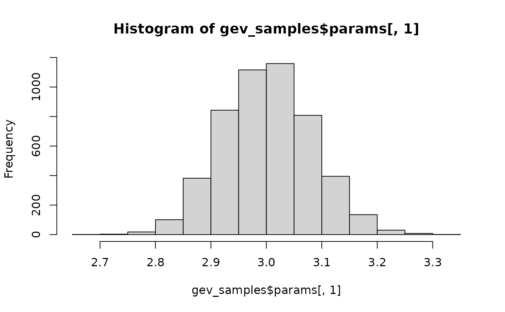
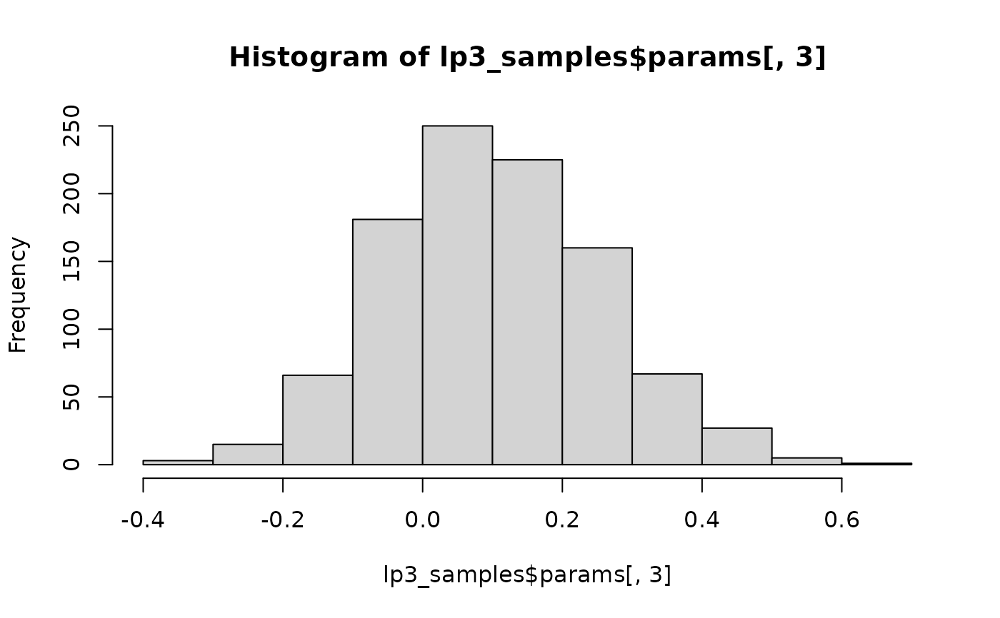

Generates matrix of parameters using posterior mode/mean and ERL
Arguments
- bestfit_postmode
Vector of distribution parameters from RMC-BestFit. For LP3: columns are mean (log), sd (log), skew (log). For GEV: columns are location, scale, shape.
- dist
Distribution type. Either
"LP3"(default) or"GEV".- ERL
psuedo effective record length for bootstrapping
- Nboots
number of bootstraps
Value
A list containing:
- params
Matrix of bootstrapped parameters
- dist
Distribution selected (LP3 or GEV)
- postmode
Posterior mode parameters provided to bootstrap
- ERL
pseudo effective record length provided to bootstrap
Examples
# Sample using JMD VFC parameters
jmd_samples <- bootstrap_vfc(c(jmd_vfc_parameters$mean_log,
jmd_vfc_parameters$sd_log,
jmd_vfc_parameters$skew_log),
dist = "LP3",
ERL = jmd_vfc_parameters$erl)
gev_example <- c(3.0, 1.0, -0.1)
gev_samples <- bootstrap_vfc(gev_example,
dist = "GEV",
ERL = 200,
Nboots = 5000)
hist(gev_samples$params[,1])

lp3_example <- c(3.5, 0.22, 0.1)
lp3_samples <- bootstrap_vfc(lp3_example,
dist = "LP3",
ERL = 300,
Nboots = 1000)
hist(lp3_samples$params[,3])
